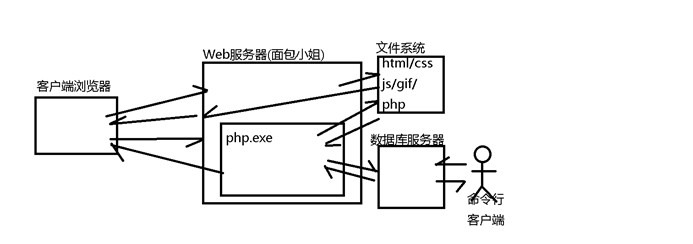
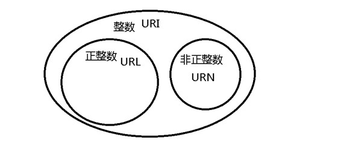
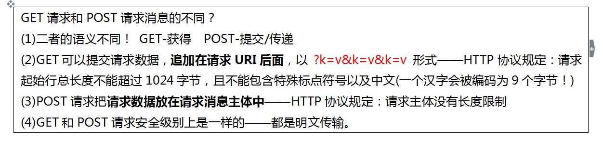
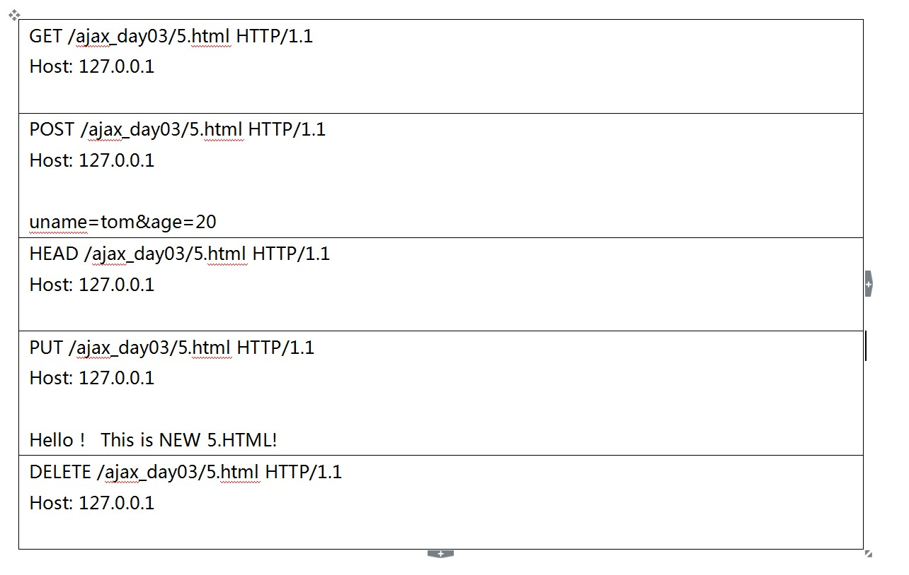

复习：
DB Server：SQL
服务器端： 存储数据
客户端： cmd、网页、php解释器
Web Server：PHP语法、连接数据库

使用PHP页面连接数据库的步骤：
提示：下述步骤与命令行连接数据库服务器的步骤是一样的。
(1)建立到数据库服务器的连接
$conn = mysqli_connect('127.0.0.1', 'root', '', 'jd', 3306);
(2)编写SQL语句，提交给服务器执行
$sql = "INSERT/DELETE/UPDATE/SELECT.......";
$result = mysqli_query($conn, $sql);
(3)查看服务器返回的执行结果
SQL：Structured Query Language
1.mysqli_query()函数可能返回的执行结果
对于任意语句只要执行失败，就返回FALSE；可能原因：
(1)SQL语法错误
(2)表名/列名根本不存在
(3)权限不足
(4)磁盘已满
执行成功的话，依据执行的语句：
1)INSERT/DELETE/UPDATE/CREATE/DROP 返回 TRUE
2)SELECT 返回 查询结果集
2.基于单表的CRUD
Create Retrieve Update Delete：增删改查
一个CRUD称为项目中的一个功能项；一个完整的项目一般包含多个CRUD。一个CRUD一般包含如下的页面：
1) query.php
2) add.html + add.do.php
3) delete.php
4) update_query.php + update.do.php
3.HTTP协议
目标：
(1)进行页面访问优化
(2)进行页面请求调用——解决“看不见摸不着”的错误
4.URL地址
URL： Unified Resource Locator，用于定位互联网上的一个唯一的资源
<a href="http://www.baidu.com/logo.png"></a>
URN：Unified Resource Naming，
<a href="mailto: admin@tarena.com"></a>
<a href="javascript: void(0)"></a>
URI： Unified Resource Identifier
URI = URL + URN

5.HTTP协议
Hyper Text Transfer Protocol：由W3C制定，用于规范在Web客户端和Web服务器之前传输Web内容所必须经过步骤和格式。由各大浏览器厂家和Web服务器厂家共同遵守。
HTTP RFC-2616
Request For Comment 标准发布前的意见征求稿
面试题： HTTP/1.1对1.0有哪些改进？
(1)支持持久连接 Connection: keep-alive
(2)支持虚拟主机 Host: www.tmooc.cn
(3)支持代理连接
HTTP协议把客户端和服务器间通信过程分为两个阶段
(1)请求阶段 - Request Message
(2)响应阶段 - Response Message


1602班：练习内容 使用Web服务器和DB服务器
步骤：
(1)创建一个.sql文件，编写下述要求需要的SQL语句
删除并重新创建一个数据库-tarena，进入该数据库；
创建一个存储用户信息的表-users，保存用户编号、用户名、密码、邮箱、生日等信息；
把上述.sql文件中的命令提交给MySQL服务器执行。
(2)创建一个register.html，包含一个用户注册的表单。
(3)创建一个register.php，接收register.html提交的注册数据，把新用户的信息保存到数据库中。提示“注册成功”或“注册失败”。
(4)创建一个login.html，包含一个用户登录的表单。
(5)创建一个login.php，接收login.html提交的用户名和密码，执行数据库验证，判定用户名和密码是否都正确，给用户以提示，“登录成功”或“登录失败”。